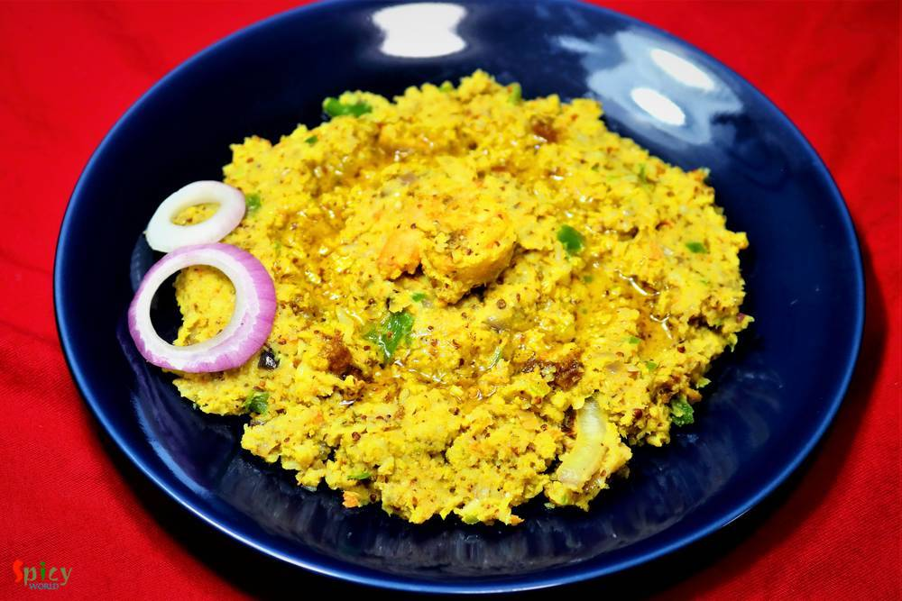
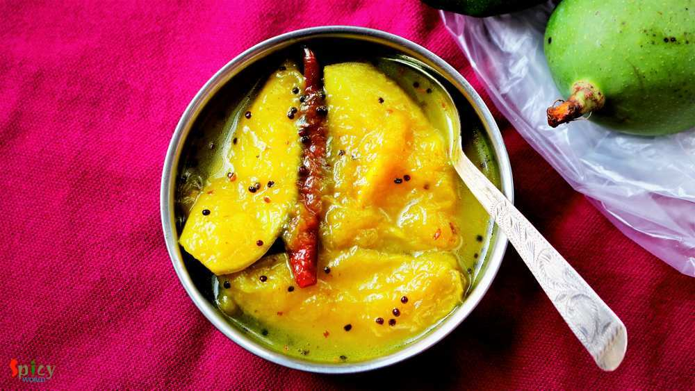
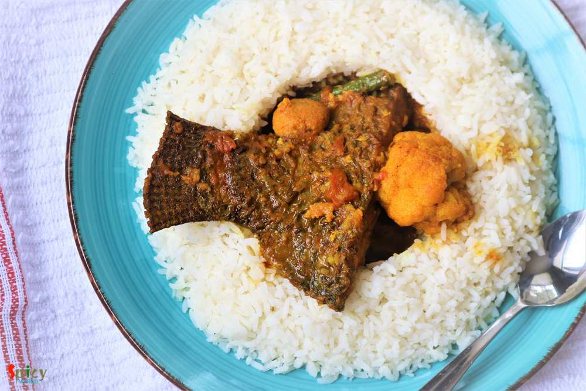

Simple and Easy Recipes
May 16, 2018
During summer Cold coffee is a must have. You can make this anytime and with minimum effort. My family is obsessed with it. I prepare this twice a week during summer. Do give this recipe a try and let me know how it turned for you.

May 15, 2018
This is a very popular recipe of mango: Mango Mastani. It has all sorts of goodness like mango pulp, fresh cream, vanilla ice cream and few other ingredients. I make this quite often in summer as it is very easy and effortless recipe. Do give this recipe a try and let me know how it turned out for you.

Nonveg Recipe
May 8, 2018
'Aam Kasundi' / Mango Mustard relish : the name itself is enough to make anyone's mouth watery, isn't it ? This delicious recipe of Chingri Mach (prawn) requires minimum time and effort to achieve its best taste. Fry everything in mustard oil and make a paste out of it ... perfect for summer ! Nobody likes to be in the kitchen for long in this hot weather. So go ahead, give this simple recipe a tr ...

Veg Recipe
May 3, 2018
Summer is here and so are the mangoes. Yesterday I went for grocery shopping and market was filled with raw mangoes (kancha aam). Off course I bought few and immediately a request came from him : can we have 'aamer chutney' tomorrow?? So, before thinking of any other recipes with raw mango I had to make this Bengali style Mango Chutney. The recipe is our family favorite. This version of mango chut ...

Nonveg Recipe
May 1, 2018
'Sobji diye Macher Jhol' is nothing fancy in Bengali households. But we people have crazy obsession about it. Tollywood made a movie named 'Macher Jhol' ! So, being a Bengali I had to share this recipe with you all. You can make so many variations of this dish. Today I made it without onion and garlic, but you can surely add them if you want. One can also skip the vegetable part. Do try this easy ...
 / Yogurt Pepper Chicken")
Nonveg Recipe
Apr 24, 2018
"Lajawab" is the only compliment about mom's recipe. My mom make this dish in a very easy and simple way. But it tastes delicious. You will need very few ingredients for this dish. This the best recipe for teenagers because its very easy to make.

Nonveg Recipe
Apr 17, 2018
Fried rice is everybody's favourite .. agree or not ? You can add whatever ingredient you have in your fridge and thats what happened with me. I had few veggies laying around, so thought why not throw everything with some rice. Best part of this idea - added some chicken strips. After around 10 minutes of stir frying a good wholesome Chicken fried rice was waiting for me to make my soul and tummy ...

Nonveg Recipe
Sep 20, 2016
I know it's been two weeks I didn't post anything due to settling down in India, but heyy now I am back with another interesting recipe from 'dhaba' gharana. Every place has their own style of dhaba / road side food joints. Whenever we plan any short trip within Bengal, we try to make the lunch stop at some popular Dhaba. Their 'torka-ruti' and 'chicken curry' with rice are must for us. I like the ...

Nonveg Recipe
Sep 1, 2016
Hey folks! I'm going back to India next week, that's why for few days I've been very busy with packing and all, regular blog post is also not happening ... very sorry for that but I hope you will understand. In Austin, this 'basic chocolate cake' will be my last post because tomorrow we will disconnect our internet. While cleaning the kitchen last week, I found half box of cocoa powder, half box o ...

Veg Recipe
Aug 31, 2016
Durga puja is just a few days away. Every street of Bengal and other parts of India will be filled with people and food stalls. Among all of them 'chaat' stalls are my favourite. I like various type of chaats like panipuri, dahi puri chat, papri chat, samosa chat, nimki chat, batata puri chat, ghugni chat and so on. Though today I am not sharing any Bengali chaat, but 'pav bhaji' is quite famous i ...
Contact Us
Guest Post
Subscribe RSS Feed
User Agreement
Public Presence
Feedback
Free Games
Home
Recipes
Categories
Images
Food Plating
About Me
Guest Post
Subscribe RSS Feed
User Agreement
Public Presence
Feedback
Free Games
Home
Recipes
Categories
Images
Food Plating
About Me
What we offer?
- Recipe Development
- Restaurant & Food Review
- Food Photography
- Website, Blog & Application Development
- UX / UI Designing
- Sponsorship & Advertisement
Contact us via Email
contact@spicyworld.in
Who we Are?


Amitava Ghosh
Website & CMS Designer, Developer and Architect.
Website & CMS Designer, Developer and Architect.